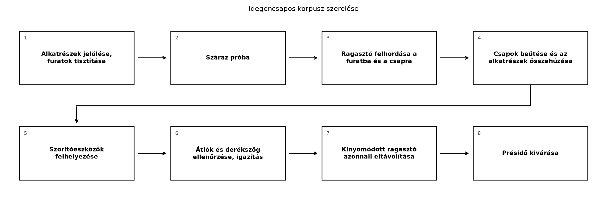

Egy konyhai alsószekrény oldallapjait, fenéklapját és korpuszsínjeit már legyártottad, a 32 mm-es furatrendszerben a köldökcsapok (tiplik) helyét is kifúrtad. Ha most rossz sorrendben ragasztasz, nem ellenőrzöd az átlókat, vagy rossz szorítót választasz, a korpusz elcsavarodik, az ajtók nem fognak illeszkedni, és a ragasztott kötés sem lesz szilárd. Ez az alfejezet azt tanítja meg, hogyan állíts össze idegencsapos, ragasztott alapszerkezeteket derékszögben, síkban, megfelelő szorítóeszközökkel és présidővel.
Képzelj el egy 600 mm mély, 720 mm magas mosogatószekrény-korpuszt. Két oldallapot, egy fenéklapot és két korpuszsínt fogsz összeépíteni köldökcsapokkal és D3-as faragasztóval. Az alkatrészeket egyenként jelöld meg (bal, jobb, alul, elöl), mert a furatok csak akkor illeszkednek pontosan, ha minden alkatrész a rajz szerinti helyére kerül. A szerelés során először mindig szárazon próbálj össze mindent, azaz ragasztó nélkül. Csak akkor húzd össze a darabokat, ha a száraz próba sikeres.
Az alábbi folyamatábra a korpuszszerelés alapvető lépéseit mutatja be.

A szerelés minősége a derékszögön és a síkfekvésen múlik. A pontos méretű, sík asztallapon végzett száraz próba a legegyszerűbb módja annak, hogy a hibákat még a ragasztás előtt észrevedd.
Definíció. Idegencsapos szerkezetnek nevezzük azt a lap- vagy keretszerkezetet, amelyben két faalkatrészt különálló, más anyagból készült (általában bükk vagy műanyag) csap köt össze. Az idegencsap lehet köldökcsap (hengeres, rovátkolt, gyakran tipli vagy dübel néven ismert), lamelló (vékony, hajó alakú laposcsap), ritkábban saját készítésű, hornyolt facsap. A csap a két alkatrészt összevezeti; a kötés teherbírását a ragasztás adja.
Definíció. Szerkezeti ragasztásnak nevezzük azt a ragasztást, amely a termék erőviselő, teherhordó kapcsolatait hozza létre. Idegencsapos korpusznál, keretnél, lépcsőfoknál, székkávánál mindig szerkezeti ragasztást alkalmazunk. A használati és vízállósági követelmény határozza meg a ragasztó osztályát.
Szabvány. A faragasztókat az MSZ EN 204 szerint D1–D4 osztályba sorolják. A belső bútorok ragasztásához általában D2 vagy D3, konyhai vagy nedves helyiségbe D3, kültéri vagy tartósan nedves szerkezethez D4 osztályú ragasztót kell választani. A pontos osztályt és felhasználási körülményeket mindig a ragasztó műszaki adatlapja tartalmazza (ellenőrizendő: aktuális MSZ EN 204 és a gyártói adatlap).
Megjegyzés. Az idegencsapos szerkezetek előnye, hogy a kötés nem igényel csapmarást; a furatok helyét viszont pontosan, sablonnal kell elkészíteni, mert a csap nem enged utólagos igazítást (0,5 mm-es eltérés már lépcsőt ad a felületen). Hátrányuk, hogy a tömörfa csapokkal szemben kisebb a viselő felület, ezért a ragasztó és a préselés minősége döntő.
Továbbvitt eredmény. A helyesen ragasztott, idegencsapos szerkezet az alapja a vasalatos, bontható kötések későbbi kialakításának is: a Vasalatos és bontható mechanikus kötések; furatok, fészkek, nútok alfejezetben a már síkban, derékszögben összeállított szerkezetekre kerülnek a kötővasalatok.
A ragasztott szerelés legsikeresebb módja a tiszta, fűrészpor- és zsírmentes felület.
Recept. Idegencsapos alkatrész ragasztásának lépései:
A ragasztott szerkezet szorításának célja, hogy a ragasztó szétterüljön a kötési felületen, és az alkatrészek a kívánt helyzetben maradjanak, amíg a ragasztó megköt.
Kézi szorítóeszközök. A legfontosabb típusok:
Prések. A prés gépi erővel hozza létre a szükséges préselési nyomást.
Gépbiztonság. A keret- és korpuszprést csak betanított, felügyelt tanuló kezelheti. A gép működése előtt ellenőrizd a hidraulikus vagy pneumatikus vezetékek állapotát, a vészleállítót, és győződj meg arról, hogy a préselési művelet közben a kezed nincs a mozgó pofák útjában. A prés erővel nyom, a beszorított ujjperc sérülését okozhatja. Egyedül, fáradtan, vészkapcsoló nélkül soha ne végezd a préselést.
Szabály. A ragasztott szerkezet akkor jó, ha a szemben lévő átlók hossza egyenlő, és a szerkezet sarkai derékszöget zárnak be. A legnagyobb korpuszoknál is ez az alapvető ellenőrzés.
Eljárás átlók méréséhez.
Az ábra egy 800 × 720 mm-es korpuszt mutat: ha a felső él 3 mm-t elmozdul, az átlók 1078,5 és 1074,1 mm-esek (derékszögben mindkettő 1076,3 mm). A szorítót a hosszabb átló két sarkára fekteted ferdén; ahogy húzod, a hosszabb átló rövidül, a rövidebb nő. A HTML-kiadásban a torzulás csúszkával állítható.
Síkfekvés ellenőrzése. A síkfekvést hosszú, egyenes vonalzóval vagy két párhuzamos zsinórral ellenőrizd. A szerkezetet a sík asztalon meglökve is észreveheted a csavarodást: ha az egyik sarok megemelkedik, a szerkezet nincs síkban. Ilyenkor a sarkok alá alátétet kell helyezni, vagy a szorítókat úgy kell áthelyezni, hogy azok a szerkezetet laposra húzzák.
A ragasztó gyártói adatlapján a présidő (általában 20–25 °C hőmérsékleten) és a présnyomás (tájékoztatóan puhafánál 0,1–0,5, keményfánál 0,5–1,0 N/mm²; ellenőrizendő: ragasztó műszaki adatlapja) szerepel. A présnyomást mindig a szorítóerőre merőleges, ragasztott felületre vonatkoztatjuk. Köldökcsapos korpusznál a szorító a kötés zárását szolgálja; a csapot a furatba illesztés feszíti, a csap palástjára a szorító nem hat. Konkrét erőt a ragasztó adatlapja és a gépkönyv ad.
Példa. Két 18 mm-es laplap élragasztása 600 mm hosszon. A ragasztott felület a szorítóerőre merőleges: . A gyártó szerint (tájékoztató). A szükséges erő . Egy kézi szorító kb. 1–1,5 kN erőt ad (ellenőrizendő), tehát kb. 3 db szorító kell. A pontos présnyomást és présidőt a ragasztó adatlapja adja meg.
Számítás. Egy keretprésben a sarokkötéseket ragasztjuk. Egy sarokkötés ragasztott felülete (két csapfelület): . A présnyomás (keményfa, tájékoztató; ellenőrizendő a ragasztó adatlapján). A szükséges erő sarkonként . A léc hosszoldala nem ragasztott felület, ezért nem számít bele.
Cím: Idegencsapos korpusz szerelése, szorítása és ellenőrzése.
Termék/alkatrész: Konyhai alsószekrény korpusz, 600 mm mély, 720 mm magas, 800 mm széles.
Anyagok: 18 mm vastag laminált forgácslap oldallapok, fenéklap, korpuszsín; 8 mm átmérőjű rovátkolt bükkönyelvű köldökcsap; D3-as faragasztó.
Gépek, szerszámok: Kézi sínszorítók, sarokszorítók, gumikalapács, ütőfa, ragasztóecset, méteres vonalzó, derékszögelő, nedves rongy, porszívó, (opcionálisan) korpuszprés.
Egyéni védőeszközök: Munkaruha, védőkesztyű a ragasztó kezeléséhez, ha az adatlap előírja.
Gépbiztonság. A kézi szorítókat ellenőrizd: a csavarmenet nem lehet sérült, a pofák nem lehetnek elgörbültek. Ha elektromos vagy pneumatikus korpuszprést használsz, ellenőrizd a vezetékeket, a reteszelőket és a vészleállítót. A gépkezelés csak betanított, felügyelt tanuló számára megengedett. Védőberendezés nélkül, egyedül, fáradtan ne végezd.
Lépések:
A ragasztott, idegencsapos szerkezetnél a következőket ellenőrizd:
Ha az átló nem jó, a ragasztó még köt, a szorítóval állíts a szerkezeten. Ha a ragasztó már megkötött, a hibát a kész terméken a vasalatok beállításával lehet részben kiegyenlíteni.
Hiba: A korpusz elcsavarodott, billeg. * Ok: A szorítókat nem egyenletesen húzták meg, vagy a szerkezetet nem sík asztalon szorították össze. * Javítás/megelőzés: A szorítást mindig sík felületen végezd. A szorítást két lépcsőben húzd meg: először enyhén, ellenőrzés után erősen.
Hiba: A ragasztott kötés éhes, a csap nem tapad, a hézag nyitott. * Ok: A nyitott idő túllépése, a ragasztó beszáradt, mielőtt összeállítottad a szerkezetet. * Javítás/megelőzés: Egyszerre csak annyi alkatrészt ragasztasz, amennyit a nyitott idő alatt össze tudsz állítani. A pontos nyitott időt a ragasztó műszaki adatlapján ellenőrizd. Meleg műhelyben a nyitott idő rövidül.
Hiba: A kinyomódott ragasztó átüt a pácon, vagy a felületen üvegszerű, világos foltok maradnak. * Ok: A kinyomódott ragasztót nem távolították el azonnal, vagy a felületet nem csiszolták át eléggé a pácolás előtt. * Javítás/megelőzés: A friss ragasztót azonnal töröld le. Miután a ragasztó megkötött, a maradékot vésővel, csiszolóvászonnal távolítsd el. Ellenőrizd a felületet festés vagy pácolás előtt.
Egy tanulóműhelyben egy tanuló ablakszárnyat ragasztott keretprésben. A száraz próbánál az átló jó volt, de a ragasztott szerelés után a keret préselésekor az egyik sarok alá egy apró forgácslapdarab került. A prés összeszorította a keretet, és a forgács beékelődött a sarok alá. A présidő letelte után a tanuló észrevette, hogy a keret nincs síkban, és az egyik sarok feszül. A hibát azonnal jelezte az oktatónak. A keretet visszahelyezték a présbe, de a megkötött ragasztó miatt a hibát már nem lehetett javítani. A keret alkalmatlan lett a beépítésre. A tanulság: a préselés előtt mindig ellenőrizd a présasztalt, és száraz próbánál is ugyanazon a sík felületen dolgozz, ahol ragasztasz.
1. feladat (A). Sorolj fel négy idegencsapos kötéshez használt szorítóeszközt.
2. feladat (A). Két 18 mm vastag, 600 mm hosszú korpuszlapot éllel összeragasztasz. A ragasztó előírása . Számítsd ki a ragasztott felületet (a szorítóerőre merőleges felület) és a szükséges préselőerőt.
3. feladat (B). Egy 900 mm × 600 mm-es keretet szerelsz össze. A két átló hossza 1081,3 mm és 1082,1 mm. Számítsd ki az átlók eltérését, és állapítsd meg, mi a teendő.
4. feladat (B). Egy széket szerelsz össze. A hőmérséklet a műhelyben 28 °C. A ragasztó adatlapja szerint a nyitott idő 20 °C-on 12 perc. Mi a teendőd, ha 20 percig tart az összes alkatrész összeállítása?
5. feladat (C). Egy asztallapot ragasztasz össze idegencsapokkal, de a lap vetemedett. Mi lehet az oka, és hogyan előzöd meg legközelebb?
6. feladat (D). Készíts technológiai lapot egy 450 mm széles, 350 mm magas fiók-káva összeállításához, ha a sarkokat 4 db Ø8 × 30 mm-es köldökcsappal (egyféle kötőelem) és D3-as ragasztóval szereled. Írd le a ragasztás, a szorítás és az ellenőrzés lépéseit.
Önellenőrzés – válaszok
Feladatok megoldásai
1. feladat (A). Gépfémszorító (sínszorító), hevederes szorító, sarokszorító, keretszorító, asztalos satu, korpuszprés.
2. feladat (A). * Adott: , , . * Keresett: és . * Képlet: , . * Behelyettesítés: ; . * Ellenőrzés: súlyerő; kb. 3 db kézi szorítóval érhető el, egyenletesen elosztva.
3. feladat (B). * Adott: . * Eredmény: Az átlók eltérése 0,8 mm. * Teendő: A szerkezet közel derékszögű. Ha a ragasztó még nem kötött meg, a keret sarkait óvatosan ütögetve vagy a szorítók áthelyezésével az átlókat egyenlővé lehet tenni. Ha a ragasztó már megkötött, a 0,8 mm-es eltérés a legtöbb szerkezetnél még elfogadható.
4. feladat (B). * Adott: A nyitott idő csökken a hőmérséklet emelkedésével. * Megoldás: 28 °C-on a nyitott idő a gyakorlatban rövidebb, mint 12 perc. Ha 20 percig tart az összeállítás, a ragasztó beszárad, és éhes kötés jön létre. * Teendő: Csökkentsd az egyidejűleg ragasztott alkatrészek számát, vagy hűtsd a műhelyt, esetleg hosszabb nyitott idejű ragasztót válassz. A pontos nyitott időt a gyártó adatlapján ellenőrizd.
5. feladat (C). * Lehetséges ok: A szorítókat nem a csapok magasságában helyezték el, ezért az összeszorítás feszítette a lapot. Vagy a száraz próba sík volt, de a ragasztás után a lapot nem sík asztalon pihentették. Az is lehet, hogy a csapok nem párhuzamosak, és a szereléskor a csapok erőltették a lapot. * Megelőzés: A szorításnál a szorítókat a csapok tengelyébe helyezd. A szerkezetet mindig sík, tiszta felületen szereld, és a szorítókat két lépcsőben húzd meg. Ha a lap nagyon feszül, a csapok helyett lamellót vagy teljes felületű ragasztást használj.
6. feladat (D). Minta technológiai lap (450 × 350 mm-es fiók-káva, 4 db Ø8 × 30 mm köldökcsap): 1. Jelöld meg az alkatrészeket (bal, jobb, elöl, hátul); a furatokat sablonnal, azonos nullpontból fúrd. – Ellenőrzés: a furatképek tükrözöttek, eltérés legfeljebb 0,5 mm. 2. Száraz próba ragasztó nélkül. – Ellenőrzés: a csap teljes mélységben ül, az átlók egyenlők (eltérés legfeljebb 1 mm). 3. Ragasztó a furatokba és a csapokra (D3, PVAc), védőszemüveg és szükség szerint védőkesztyű. – Ellenőrzés: vékony, egyenletes ragasztóréteg. 4. Összeállítás, sarokszorítók a csapsorok magasságában. – Ellenőrzés: derékszög, síkfekvés. 5. Átlómérés (450 × 350 → átló kb. 570 mm). – Ellenőrzés: a két átló eltérése legfeljebb 1 mm. 6. Kinyomódott ragasztó nedves ruhával való letörlése. – Ellenőrzés: nincs ragasztófolyam. 7. Pihentetés a gyártó adatlapja szerint (pl. 2 óra szorítóban, ellenőrizendő).
Az idegencsapos, ragasztott szerkezetek szerelése során a csapokat és a furatokat ragasztóval kenjük be, majd a szerkezetet szorítóeszközökkel vagy présekkel rögzítjük. A szerelés előtt mindig száraz próbát kell végezni, mert így derül ki, ha a csap nem illeszkedik, vagy a furat nem megfelelő. A préselés alatt a szerkezet derékszögét az átlók mérésével, síkfekvését egyenes vonalzóval ellenőrizzük. A szorítóeszközök közül a kézi szorítókat (sínszorító, sarokszorító) kisebb munkákhoz, a keret- és korpuszprésekeket nagyobb sorozatokhoz alkalmazzuk. A présidőt és a présnyomást mindig a ragasztó gyártójának adata alapján kell beállítani. A kinyomódott ragasztót azonnal, nedves ruhával töröljük le. A hibás szerkezetet csak addig lehet javítani, amíg a ragasztó meg nem köt. A helyesen összeállított, idegencsapos szerkezetből épül fel a Vasalatos és bontható mechanikus kötések; furatok, fészkek, nútok alfejezetben tárgyalt, csavarozott szerelés.